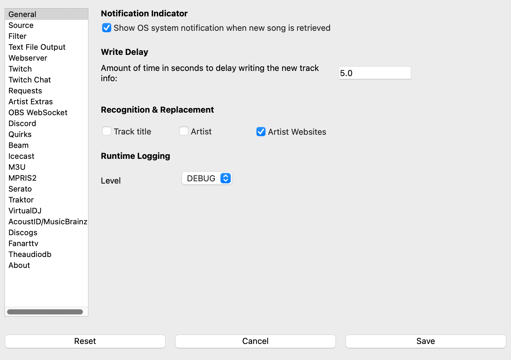

Settings¶
{kind=link}
Notification Indicator - Selecting this option will show a system notification when new track info is detected.
This is useful for verifying that the app is polling and retrieving data.
The notification displays the track information after detection.
Some software (such as Serato) will not show notifications in full-screen mode. You may need to take it out of full screen node to see the notification.
Write Delay - The amount of time, in seconds, to delay writing the new track info once it’s retrieved. If not populated, it will default to 0 seconds.
A setting of zero will update the track info on-screen immediately as a new track is detected. This time value may be too soon for some DJ’s mixing style as well as some features. Increasing the write delay allows for much more tuning.
Recognition Replacement - By default, if a Music Recognition service is enabled, it will only supplement any missing information. These options forcibly replace title and artist from any enabled recognition services.
Logging Level - By default, What’s Now Playing will write debug logs into your Documents/NowPlaying/Logs directory. This option lets you control the level of logging.
At the bottom of every page will be the “Reset”, “Cancel”, and “Save” buttons:
Reset - Change all settings back to default.
Cancel - Close the window without saving.
Save - Save the settings